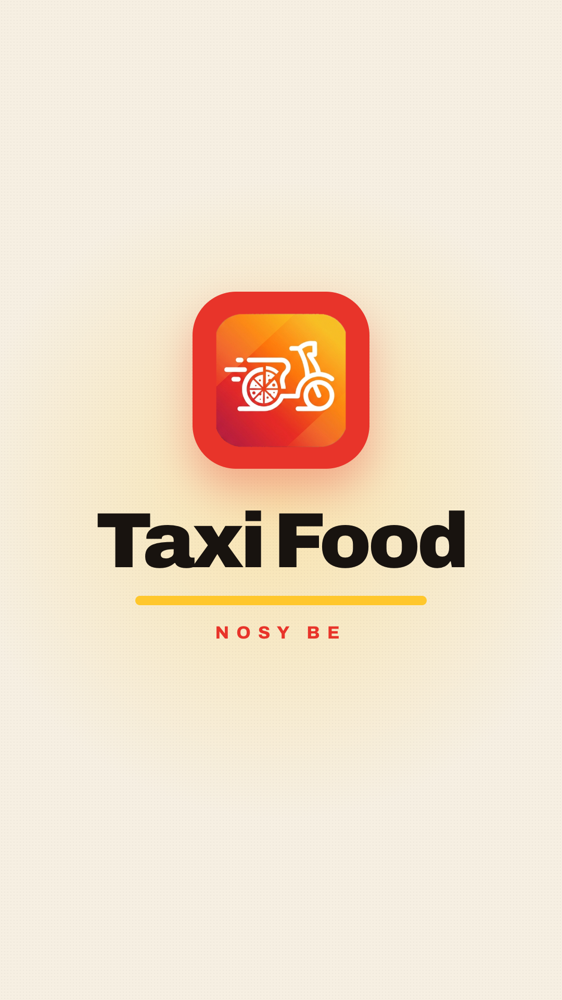
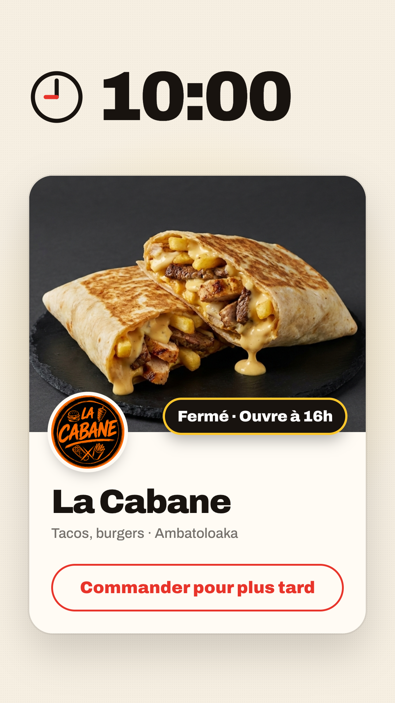
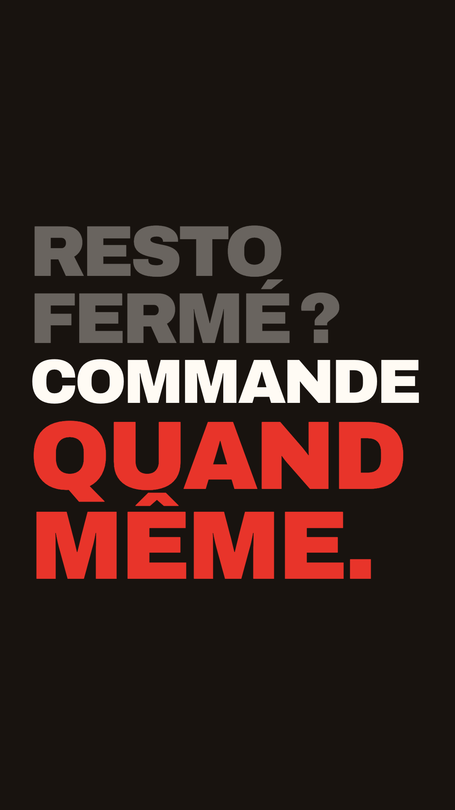
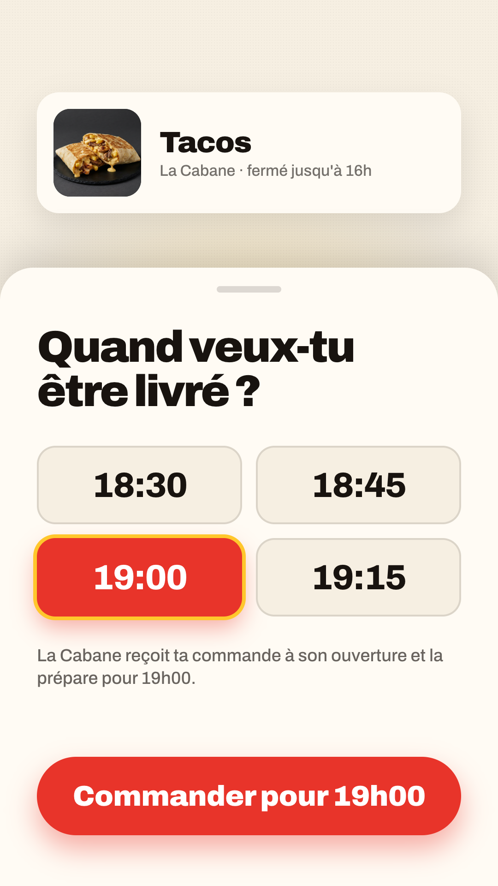
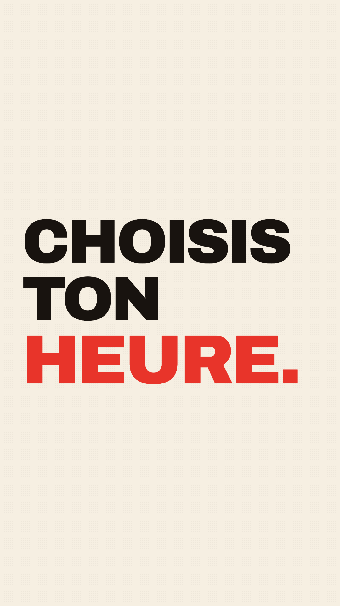
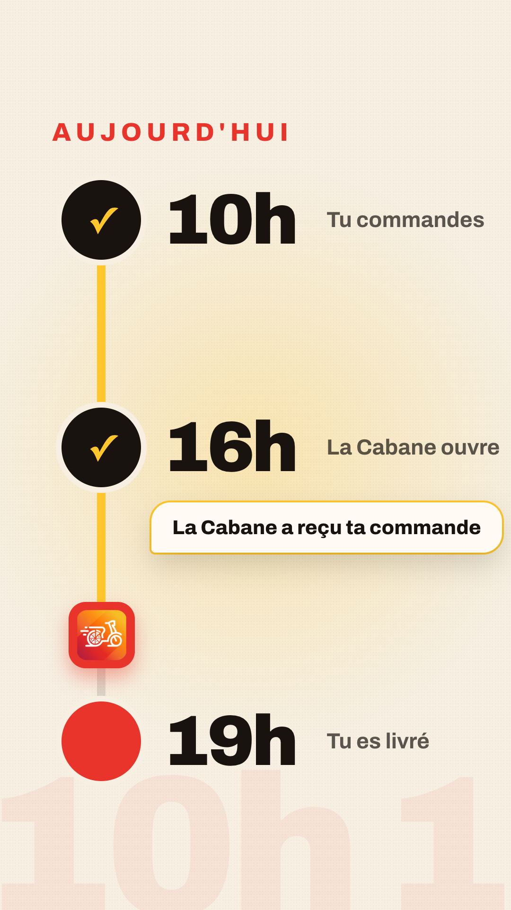
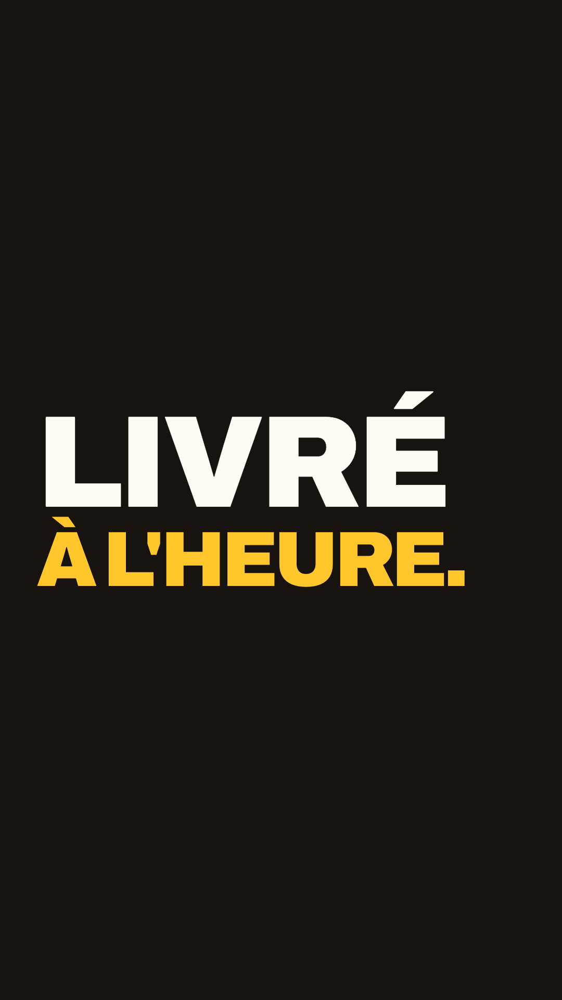
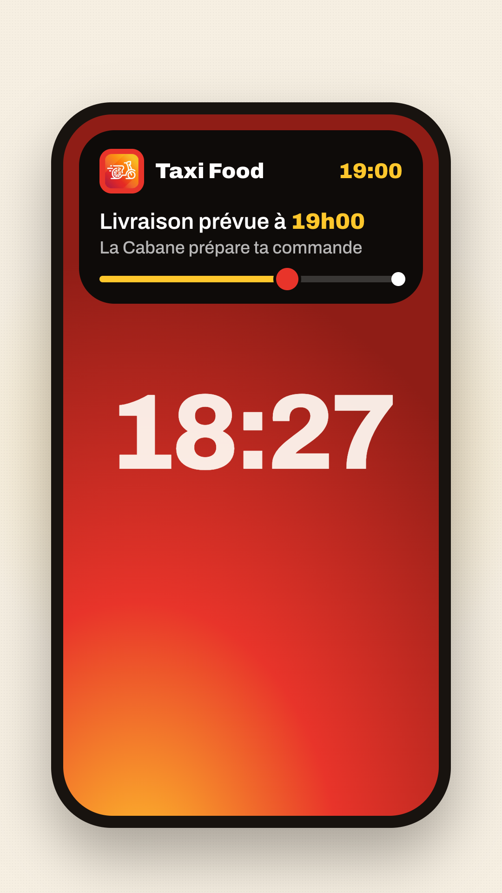
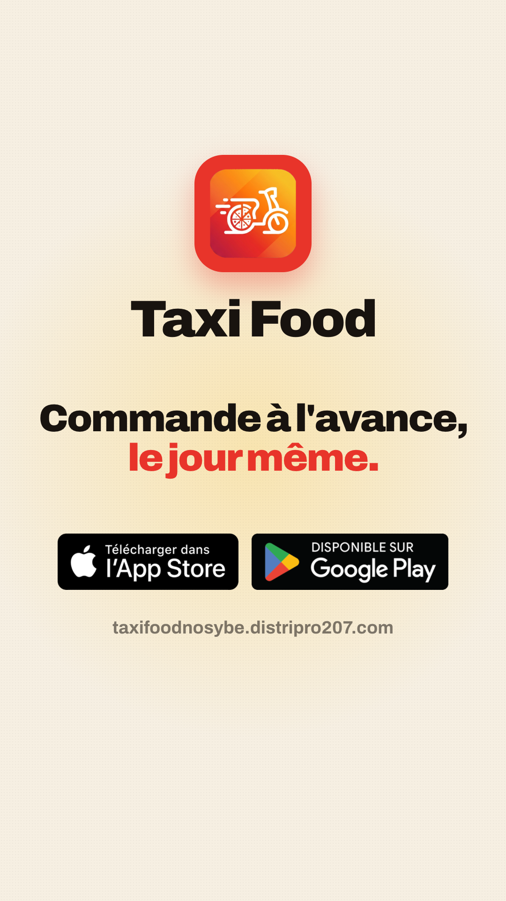

Animation : Le carré rouge arrive en tournant avec flou de vitesse, se pose avec un rebond, « Taxi Food » se déroule lettre par lettre, le filet or se trace de gauche à droite.
Son : Whoosh d'entrée · « pop » du carré · petit swish du filet

Animation : Coupe en zoom flouté. Les aiguilles tournent jusqu'à 10:00 pendant que les chiffres défilent. La carte de La Cabane monte, la caméra pousse dessus, le badge « Fermé · Ouvre à 16h » claque avec un rebond.
Son : Tic-tac rapide · « thud » du badge

Animation : Mots plein cadre sur le temps, chacun avec une entrée différente : RESTO glisse, FERMÉ ? tombe, COMMANDE claque, QUAND MÊME. explose en rouge.
Son : Une frappe percussive par mot, calée sur la musique

Animation : Fouetté vers le haut. Le panneau monte avec un ressort, les heures apparaissent en cascade, le cadre de sélection saute 18:30 → 18:45 → 19:00 et s'y fixe (contour or), le bouton se remplit de rouge puis s'enfonce sous un appui.
Son : Glissé du panneau · trois clics de sélection · « confirm » au bouton

Animation : Les trois mots claquent sur le temps, HEURE. en rouge avec un léger écho de mouvement.
Son : Frappes sur le temps

Animation : Zoom flouté. La ligne or se trace de 10h à 16h, les jalons s'allument un à un ; à 16h la bulle « La Cabane a reçu ta commande » rebondit ; le scooter descend sur la ligne vers 19h.
Son : Tic à chaque jalon · « ding » de la bulle · moteur léger du scooter

Animation : LIVRÉ claque en crème, À L'HEURE. arrive en or depuis la droite.
Son : Frappes sur le temps

Animation : L'iPhone entre en rotation 3D et se redresse ; l'îlot noir s'ouvre comme une notification iOS en direct, la barre se remplit et le scooter avance.
Son : « Ding » de notification · whoosh du téléphone

Animation : Le logo revient, la phrase monte en cascade, les badges apparaissent, une lueur or respire derrière.
Son : Accord final de la musique